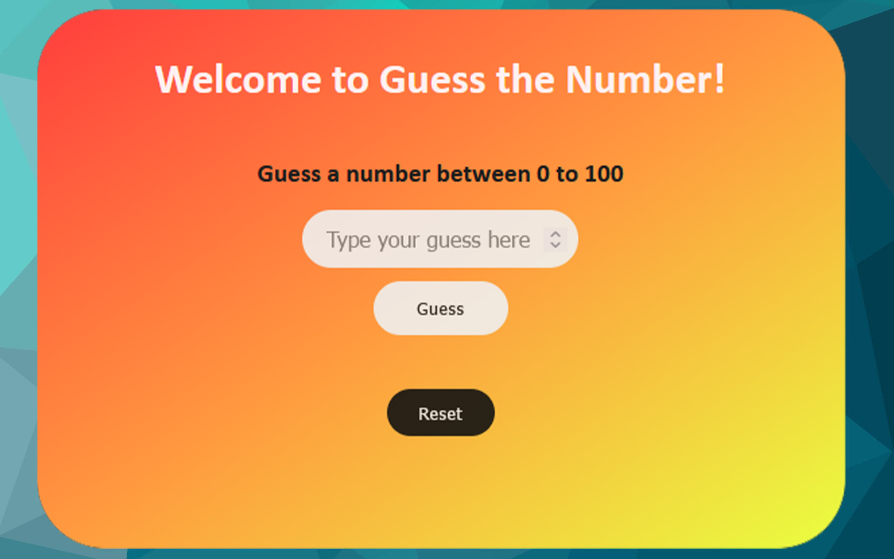

Guess the Number
Datorn genererar ett slumpmässigt nummer mellan 0 och 100. Spelaren matar
in ett tal i en input-ruta, d.v.s det tal som gissas på. Om talet är samma som datorns, så får
spelaren
ett meddelande att man vunnit. Om talet är lägre än datorn och över 0 får spelaren ett meddelande om
att talet är för
lågt. Om talet är högre än datorn och mindre än 100 får spelaren ett meddelande om att talet är för
högt. Spelaren har 5
chanser på sig att gissa rätt tal.